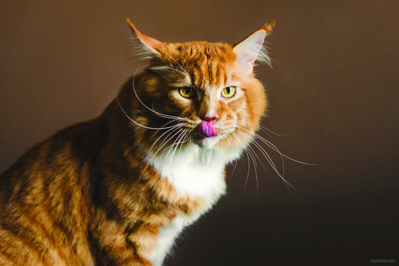
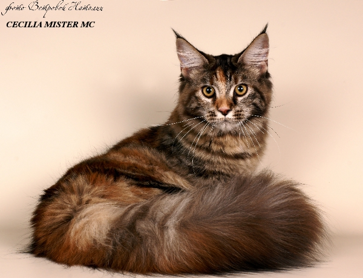

| Легенды | Описание | Характер |
| Согласно одной легенде, кошка мейн-кун – это животное от скрещивания самки енота и кота.
В подтверждение этой теории приводятся внешние особенности кошки, а именно – хвост, окрас которого
очень подобен еноту.
Согласно второй легенде, котята мейн-кун появились в результате скрещивания североамериканской рыси с обыкновенным котом. Подтверждением этой теории являются кисточки на ушках кошек этой породы, которые, как полагают, достались им от рыси-мамы. Те, кто изучают происхождение этих кошек, утверждают, что в их истории нет никаких тайн. Порода появилась в результате естественной эволюции. |
 Котята мейн кун, как и взрослый кот этой породы — одни из самых необыкновенных особей в своём роде. Его многочисленные окрасы, густая пушистая шерсть, необыкновенно густой хвост, очаровательная мордашка и большие размеры – те отличия, которые выделяют кошку породы мейн-куна из многих других животных семейства кошачьих.  |
Мейнкун – это не только очень красивое животное, поражающее своим большим мускулистым телом
(фото с человеком наглядно показывает всю статность кошки), шикарной внешностью и очень выразительными
глазами, но и животное, которому достался особенный характер. О его характере много можно узнать от
хозяев этого кота, отзывы которых «говорят сами за себя».
Забавные привычки этих больших кошек – то, что умиляет и смешит их обладателей, так как их большой вес делает их игры весьма юмористичными. Эти кошки всегда готовы прийти на помощь, независимо от того, чем вы заняты. Любопытные и милые, они совсем не соответствуют своему большому размеру. |